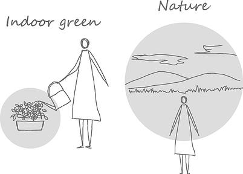

unkai
unkai
prototype
柔らかな光を受けて輝く草木の朝露に時を忘れて見入ってしまう− "Unkai"はそのような体験を日々の生活の中で生み出すプロダクトです。忙しい日々に追われて余裕を失いがちな私たちと、ありのままの自然の姿からかけ離れてしまった観葉植物の関係性を見つめ直す中で、 "Unkai" のコンセプトは生まれました。
Design
幅広いフレーム形状は、雲海に浮かぶ山々のような雄大な風景を ”みたてた” デザインです。日本の自然美を捉え、日本画や庭園にその世界観を落とし込んだ遥か昔の表現者が創り出した手法を、現代のテクノロジーでアレンジしました。
System
"Unkai" は内蔵された各種センサ・LED照明・ミスト装置・CPUによって自律的に周辺環境を最適化するため、煩わしさを感じることなく日常生活に取り入れることができます。本体下には1.5Lの大容量水タンクを設け、たっぷりの水で植物を乾燥させません。